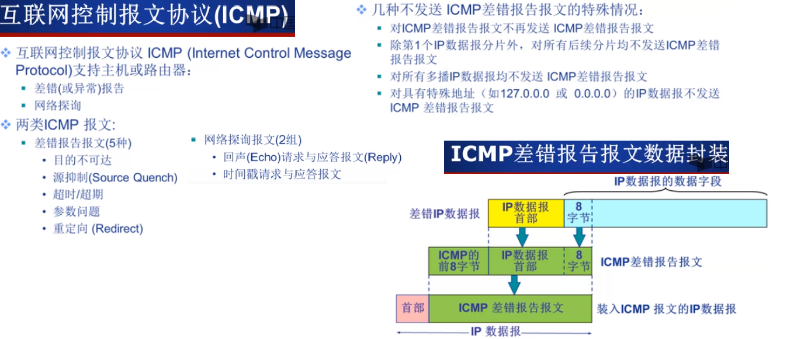

网络层
网络层
网络层服务模型

Internet网络层
IP数据报首部长度范围为20~60字节。发送IP分片时，每个片段的最大长度等于MTU减去IP数据报首部长度，
且应该是8的倍数(计算过程如图)。
IPV4通过标识、标志和片偏移字段来确定分片的相对顺序；
- IP地址
私有地址: 这些地址是不会被Internet分配的，它们在Internet上也不会被路由，虽然它们不能直接和Internet网连接， 但通过技术手段仍旧可以和 Internet通讯（NAT技术）。 我们可以根据需要来选择适当的地址类，在内部局域网中将这些地址像公用IP地址一样地使用。 A: 10.0.0.0~10.255.255.255 即10.0.0.0/8 B: 172.16.0.0~172.31.255.255即172.16.0.0/12 C: 192.168.0.0~192.168.255.255 即192.168.0.0/16 广播: 在同⼀个链路中相互连接的主机之间发送数据包(即本地广播), 且路由器不会转发广播(即会屏蔽所有IP地址全为1的数据包) 直接广播: 在不同⽹络之间的⼴播叫做直接⼴播, 对特定网络上的所有主机进行广播 组播多播⽤于将包发送给特定组内的所有主机。这个特定组可以在本网内，也可以跨路由器。
1、客户机通过UDP分组发送DHCP发现报文，其中源地址为0.0.0.0，表示本机， 目的地址为255.255.255.255，表示本网广播地址，因此会向本网内的所有主机发送报文。 2、DHCP服务器接收到发现报文后，通过DHCP提供报文向客户作出响应，其目的地址为255.255.255.255( 因为此时客户机尚未有自己的IP地址，所以通过广播形式)。
- 无类别域间路由选择(Classes Interdomain Routing, CIDR)
形式为a.b.c.d/x，其中x指示了NetId的长度，剩余的32-x位用来区分组织内部设备； 一个组织通常被分配一块连续的地址，即具有相同前缀的的一段地址； 这样该组织内部的设备的IP地址将共享共同的前缀。这种使用单个网络前缀通告多个网络的能力称为地址聚合或者路由聚合。
网络地址转换
ICMP

- 常见ICMP消息类型
traceroute: 是故意设置特殊的TTL，来追踪去往⽬的地时沿途经过的路由器， 利⽤IP包的⽣存期限从1开始按照顺序递增的同时发送UDP包，强制接收ICMP超时消息， 例如设置TTL为5，则到达第五个路由器时，该报文超时被丢弃，该路由器会向发送端返回一个ICMP超时报文， 发送端根据接收到该报文与发送该报文的时间差，可以得到其与第五个路由器之间的RTT。 traceroute 在发送 UDP 包时，会填⼊⼀个不可能的端⼝号值作为 UDP ⽬标端⼝号（⼤于 3000 ）。 当⽬的主机收到 UDP 包后，会返回 ICMP 差错报⽂消息，但这个差错报⽂消息的类型是「端⼝不可 达」。所以，当差错报⽂类型是端⼝不可达时，说明发送⽅发出的 UDP 包到达了⽬的主机。